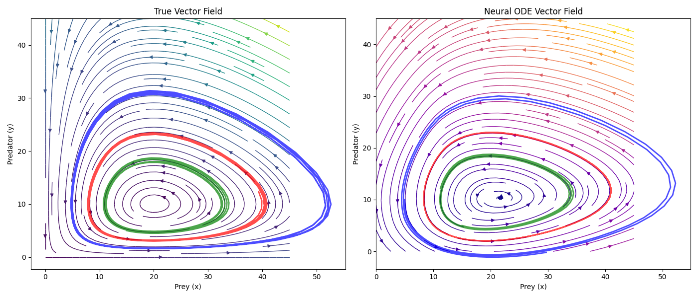

Introduction
Neural ODEs combine the structural integrity of ODE theory, with the learnable aspects of machine learning. This allows us to model complex dynamical systems that are difficult to capture with traditional methods, or where the underlying physics is not fully understood. Neural ODEs are of the form
For example, let's say we had some biological data about the interaction between two organisms. To have an ODE model of this system, we would need to derive the equations governing their interactions, which is not always straightforward. However, with Neural ODEs, we can train a neural network to learn these dynamics from the data available. Note that this is different from traditional neural networks, which typically operate in discrete time steps. Neural ODEs model the continuous evolution of a system over time. Furthermore, the neural network does not output the state of the system directly, for some time \(t\). Instead, it outputs the derivative fo the state with respect to time, and then to find the state at time \(t\), we integrate this ODE (with Runge-Kutta, Euler, etc.) from an initial state. Finally, neural ODEs are more memory efficient during training, and are strong at time series data modeling. Since traditional neural nets use smooth activation functions, the right hand side satisfies the conditions for existence and uniqueness of solutions to ODEs (Picard-Lindelöf theorem).
Intuition
Let's assume \(\mathbf{h}\) is a single variable, and not a vector, i.e. just \(h\). Then the derivative depends on the current value of \(h\) and time \(t\). If we consider the Euler method for solving ODEs, we can approximate \(h\) for any time \(\tau\) as follows:
Where \(h(t_0)\) is the initial state, and can be thought of as the "input", and \(\Delta t\) is the time step. \(N\) is the number of time steps from \(t_0\) to \(\tau\), i.e. \(N = \frac{\tau - t_0}{\Delta t}\). Finally, \(f_{\theta}\) is the neural network parameterized by \(\theta\). During training, we adjust \(\theta\) to minimize the difference between the predicted \(h(\tau)\) and the actual observed value at time \(\tau\). This is advantageous, as we don't need a large model to directly map inputs to outputs. Instead, our model learns the vector field of the system, which can be more efficeint and generalizble. Furthermore, it's a smaller task to learn the derivative function than to learn the entire mapping. If our input data is something like an image, we would first use a convolutional neural network (CNN) to extract features from the image. This is known as a latent representation of the image. From here, we can treat this latent vector as the initial state \(h(t_0)\) of our Neural ODE. The neural network \(f_{\theta}\) would then learn how this latent representation evolves over time.
Earlier we assumed \(h\) was a single value instead of a vector, however, the theory is the same for a vector. Instead, we would have a system of ODEs, where each component of the vector evolves according to its own dynamics, but all components are coupled through the neural network.
Examples
Neural ODEs are especially useful for modeling time-dependent data or systems with unknown dynamics. Some examples include:
- Modeling the spread of infectious diseases, where disease progression is continuous and partially observed.
- Simulating population dynamics in ecology, capturing smooth changes over time.
- Predicting stock market trends from irregularly sampled financial data.
- Understanding climate change impacts through continuous modeling of environmental variables.
- Analyzing fluid dynamics in engineering, where the underlying physical equations may be partially unknown.
To highlight its accuracy, we will first use a system where the underlying dynamics are known: the Lotka-Volterra Equations. These equations model the interaction between predator and prey populations, and are given by:
Using a simple multi-layer perceptron (MLP), we can build a quick and accurate neural ODE. Below is a plot of the true dynamics (on the left) to the learned dynamics (on the right). There are also 3 representative trajectories in each plot, these are the blue, red, and green curves. Below the plot is a simple animation.
As we can see, the neural ODEs are extremely accurate. With a more complex neural net, the accuracy can be improved even further, and capture more complex dynamics. This shows the capability of this method.